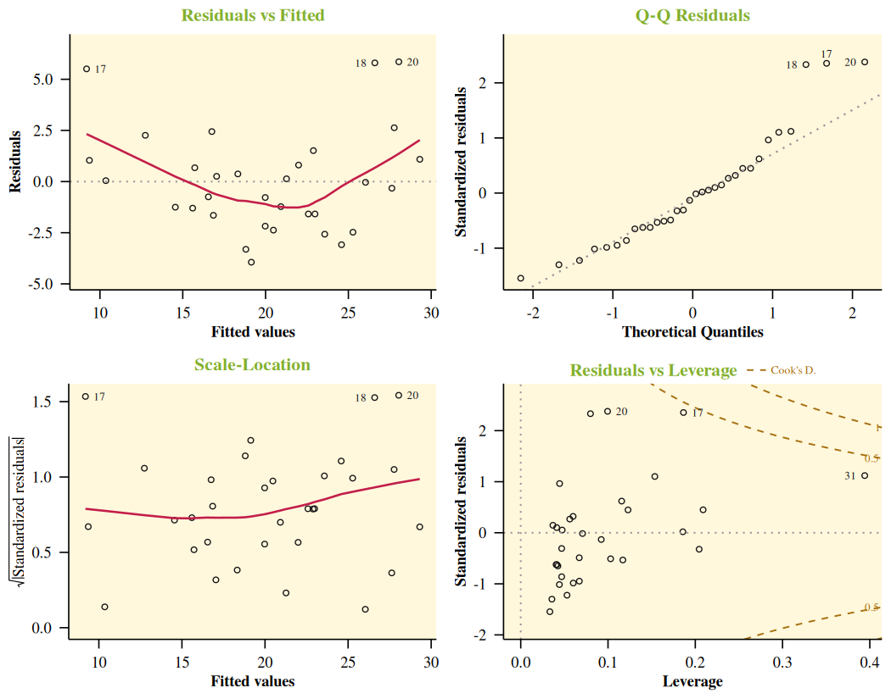

Chic and sleek functions for beautiful statisticians.
snazzieR formats regression output for R Markdown reports. Its tables come out as LaTeX for PDF documents or as plain text for the console, and its plots share one ggplot2 theme and a palette of 35 named colors.
Installation
# Released version, from CRAN
install.packages("snazzieR")
# Development version, from GitHub
# install.packages("remotes")
remotes::install_github("DetectiveFierce/snazzieR")Functions
| Task | Functions |
|---|---|
| Summarize a linear model |
model.summary.table(), ANOVA.summary.table(), model.equation()
|
| Check a fitted model |
diagnostics.plots(), marginal.model.plots(), unusual.points.table(), VIF.table()
|
| Partial least squares |
pls.regression(), SVD.pls(), NIPALS.pls(), pls.summary()
|
| Ridge regression |
ridge.regression(), ridge.summary()
|
| Eigenvalues of a correlation or covariance matrix | eigen.summary() |
| Plot styling |
snazzieR.theme(), color.ref(), and colors such as Red and Dark.Blue
|
Example
library(snazzieR)
model <- lm(mpg ~ wt + hp, data = mtcars)
# Coefficients, fit statistics and the fitted equation in one table.
# Returns LaTeX by default; latex = FALSE prints to the console.
model.summary.table(model, title = "Fuel Economy", latex = FALSE)
# The four plot(lm) panels as ggplots
diagnostics.plots(model)
# Observations worth a second look, labelled by car name
unusual.points.table(model, latex = FALSE, id = rownames(mtcars))
# Variance inflation factors
VIF.table(model, latex = FALSE)
Table previews
A LaTeX table has nothing to show when you run a chunk with the “Run” button, so snazzieR tables print an HTML preview in RStudio and Positron and a plain-text preview in other interactive sessions. Knitting produces the LaTeX. Set options(snazzieR.preview = "html"), "text" or "latex" to pick one; ?snazzieR_table has the details.
Documentation
- Guide with rendered examples: https://finitesample.space/snazzier
- Function reference and articles: https://detectivefierce.github.io/snazzieR/
- Changes in each release: NEWS.md
Report bugs at https://github.com/DetectiveFierce/snazzieR/issues.